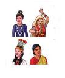
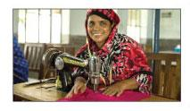

অধ্যায় ৪
নাগরিক অধিকার
১. সামাজিক অধিকার
বাংলাদেশের নাগরিক হিসেবে আমরা রাষ্ট্রের কাছ থেকে প্রধানত তিন ধরনের অধিকার পাই। যেমন- সামাজিক অধিকার, রাজনৈতিক অধিকার ও অর্থনৈতিক অধিকার।
সমাজে সুস্থ ও সুন্দর জীবনযাপনের জন্য যেসব অধিকার অপরিহার্য সেসব অধিকারকে সামাজিক অধিকার বলে। রাষ্ট্রের কাছ থেকে এই অধিকারগুলো আমরা পেয়ে থাকি। নিচের ছক থেকে কয়েকটি সামাজিক অধিকার জেনে নিই।
বেঁচে থাকার অধিকার
জীবন রক্ষার অধিকার সকল অধিকারের মধ্যে অন্যতম। আমাদের বেঁচে থাকার জন্য প্রয়োজন খাদ্য, বস্ত্র, বাসস্থান, চিকিৎসা ইত্যাদি জীবনের নিরাপত্তা।
শিক্ষার অধিকার
শিক্ষালাভের অধিকার প্রতিটি নাগরিকের একটি অন্যতম অধিকার। রাষ্ট্রের উন্নয়নের জন্য প্রত্যেক নাগরিকের শিক্ষা গ্রহণ করা প্রয়োজন।
চলাফেরার অধিকার
প্রত্যেক নাগরিকের দেশের ভিতরে স্বাধীনভাবে চলাফেরার অধিকার আছে। এ কারণে আমরা কোনো রকম বাধা ছাড়া সহজেই যেকোনো স্থানে যেতে পারি।
ধর্ম পালনে র অধিকার
এদেশের মুসলমান, হিন্দু, বৌদ্ধ, খ্রিষ্টান প্রত্যেকেরই নিজ ধর্মীয় উৎসব পালনের অধিকার আছে।
ভা ষা ও সংস্কৃতির অধিকার
নিজ মাতৃভাষায় কথা বলা নাগরিকের মৌলিক অধিকার। একইভাবে নিজ নিজ সংস্কৃতি চর্চা করা ও উৎসব পালন করাও এই অধিকারের অন্তর্ভুক্ত।

ক । এসো বলি
শিক্ষকের সহায়তায় শ্রেণিতে আলোচনা কর।
-
নাগরিকের অধিকার বলতে কী বোঝায়?
-
নিজের দেশের প্রতি কীভাবে দায়িত্ব পালন করা যায়?
-
দেশের সরকার কীভাবে প্রতিটি নাগরিকের নিরাপত্তা নিশ্চিত করবে?
খ । এসো লিখি
প্রতিটি সামাজিক অধিকারের উদাহরণ লেখ। প্রতিটি বাক্য ‘আমার অধিকার আছে …….’ দিয়ে শুরু কর। কাজটি জোড়ায় কর।
|
অধিকার |
উদাহরণ |
|
বেঁচে থাকা |
আমার অধিকার আছে পর্যাপ্ত পরিমাণ খাদ্য খেয়ে বেঁচে থাকার। |
|
শিক্ষা |
আমার অধিকার আছে বিদ্যালয়ে যাওয়ার। |
গ । আরও কিছু করি
প্রতিটি অধিকারের সাথে দায়িত্ব জড়িত আছে। অধিকারের সাথে সাথে কোন দায়িত্ব পালন করা প্রয়োজন তা লেখ। প্রতিটি বাক্য আমরা উচিত………..’ দিয়ে শুরু করা।
|
অধিকার |
দায়িত্ব |
|
বেঁচে থাকা |
আমার উচিত যারা খাবার পায়না তাদের খাদ্য দিয়ে সাহায্য করা। |
|
শিক্ষা |
আমার উচিত নিয়মিত পড়া লেখা করা। |
ঘ । যাচাই করি
সঠিক উত্তরের পাশে টিকচিহ্ন (√) দাও:
নিচের কোনটি সামাজিক অধিকার?
ক) বাঁচার অধিকার
খ) ঘুমানোর অধিকার
গ) ছুটি নেওয়ার অধিকার
ঘ) অর্থের অধিকার
২০২। রাজনৈতিক অধিকার
ভোটদান ও বিভিন্ন কাজের মাধ্যমে রাষ্ট্র পরিচালনায় এবং শাসনকার্যে নাগরিকদের অংশগ্রহণ করার অধিকারকে রাজনৈতিক অধিকার বলে।
নিচের পাঁচটি রাজনৈতিক অধিকারের কথা উল্লেখ করা হলো। এই অধিকারগুলো রক্ষার মাধ্যমে আমরা একটি সুন্দর দেশ ও জাতি গড়তে পারে।
|
নির্বাচনের অধিকার |
আঠার বছর ও তার উপরের সকল নাগরিকের ভোট দেওয়ার এবং ২৫ বছর বয়সে সকল নাগরিকের নির্বাচনে অংশগ্রহণ করার অধিকার আছে। | |
|
মত প্রকাশের অধিকার |
প্রত্যেক নাগরিকের বাড়িতে, বিদ্যালয়ে এবং সমাজে স্বাধীনভাবে নিজস্ব মত প্রকাশের অধিকার আছে। | |
|
আইনের চোখে সবার সমান অধিকার |
জাতি, ধর্ম, বর্ণ, ধনী, দরিদ্র, নারী-পুরুষ ইত্যাদি নির্বিশেষে সকলের আইনের সমান আশ্রয় লাভের অধিকার আছে। | |
|
বিদেশে নিরাপত্তা লাভের অধিকার |
কোনো নাগরিক বিদেশে অবস্থানকালে বিপদে বা সমস্যায় পড়ত পারেন। এমতাবস্থায় তার নিজ রাষ্ট্রের সরকারের কাছে নিরাপত্তা দাবি করার অধিকার আছে। | |
|
ব্যক্তি স্বাধীনতা রক্ষার অধিকার |
প্রত্যেক নাগরিকের স্বাধীনভাবে নিজের পছন্দ অনুযায়ী কিছু করার অধিকার আছে। তবে সে অধিকার যেন অন্যের কোনো ক্ষতির কারণ না হয় সেদিকে খেয়াল রাখা প্রয়োজন। |
ক । এসো বলি
শিক্ষকের সহায়তায় শ্রেণিতে আলোচনা কর যে, একটি দেশের নাগরিক কীভাবে রাষ্ট্র পরিচালনায় অংশগ্রহণ করে।
-
নির্বাচন কী?
-
নির্বাচন কখন হয়?
-
কারা ভোট প্রদানে অংশগ্রহণ করতে পারেন?
খ । এসো লিখি
প্রতিটি রাজনৈতিক অধিকারের একটি করে উদাহরণ লেখ। ‘আমার পরিবার’…. দিয়ে বাক্যগুলো শুরু কর। কাজটি জোড়ায় কর।
|
অধিকার |
উদাহরণ |
|
নির্বাচনের অধিকার |
আঠার বছর বয়স হলে আমি ভোট দিতে পারব। |
|
মত প্রকাশের অধিকার |
পরিবারের সদস্যরা স্বাধীনভাবে মতামত প্রকাশ করতে পারেন। |
গ । আরও কিছু করি
চারজনের ছোট দলে নিচের ভূমিকাভিনয় কর।
যেকোনো দুইজন শিক্ষার্থী অন্য দুইজন শিক্ষার্থীকে ভোট প্রদান করতে নিষেধ করবে।
অবশিষ্ট দুইজন যুক্তিসহকারে তাদের নির্বাচনের অধিকারের কথা বলবে।
এই অভিনয় থেকে কী শিখলে?
ঘ । যাচাই করি
বাক্যটি সম্পূর্ণ কর।
ভোট দেওয়ার অধিকার গুরুত্বপূর্ণ কারণ ………………………………………… .………।
২২৩। অর্থনৈতিক অধিকার
জীবনধারণের জন্য কোনো কাজ করে আয় রোজগার করার অধিকারকে অর্থনৈতিক অধিকার বলে। সুষ্ঠুভাবে জীবিকা নির্বাহের জন্য এ অধিকারগুলো প্রয়োজন। নিচে উল্লিখিত কয়েকটি গুরুত্বপূর্ণ অর্থনৈতিক অধিকার সম্পর্কে আমরা জানব।
আয় রোজগার করার অধিকার
সকল নাগরিকের স্বাধীনভাবে চাকরি বা ব্যবসা বা অন্য কাজ করে আয় রোজগারের অধিকার আছে।
ন্যায্য মজুরি লাভের অধিকার
যেকোনো কাজ করে সবার ন্যায্য মজুরি লাভের অধিকার আছে।

সম্পত্তির অধিকার
প্রত্যেক নাগরিকের সম্পত্তি অর্জন ও ভোগ করার অধিকার আছে।
অবকাশ ছুটি লাভের অধিকার
যে যেখানেই কাজ করুন, সবারই কর্মক্ষেত্রে অবকাশ ছুটি পাওয়ার অধিকার আছে।
২৩ক । এসো বলি
শিক্ষকের সহায়তায় শ্রেণিতে আলোচনা কর:
-
কাজ করা প্রয়োজন কেন?
-
ন্যায্য মজুরি বলতে কী বোঝায়?
-
কাজের মাঝে অবকাশ ছুটি লাভের প্রয়োজনীয়তা কী?
খ । এসো লিখি
প্রতিটি অর্থনৈতিক অধিকারের একটি করে উদাহরণ লেখ। কাজটি জোড়ায় কর।
|
অধিকার |
উদাহরণ |
|
আয় রোজগার করার অধিকার |
কৃষক কৃষিকাজ করে আয় করেন অথবা …. |
|
ন্যায্য মজুরি লাভের অধিকার |
শ্রমজীবী মানুষ শ্রমের বিনিময়ে মজুরি লাভ করেন … |
গ । আরও কিছু করি
তোমার এলাকায় কোন কোন পেশাজীবী বাস করেন তার একটি তালিকা তৈরি কর। তাদের ছবি সংগ্রহ করে/এঁকে একটি পোস্টার বানাও।
ঘ । যাচাই করি
নিচের কোনটি কোন অধিকার তা ছকের নির্ধারিত স্থানে লেখ।
|
শিক্ষা |
মজুরি |
ভোট |
বাসস্থান |
ভাষা |
অবকাশ যাপন |
| সামাজিক অধিকার | রাজনৈতিক অধিকার | অর্থনৈতিক অধিকার |
|
- |
- |
- |
|
- |
- |
- |
|
- |
- |
- |